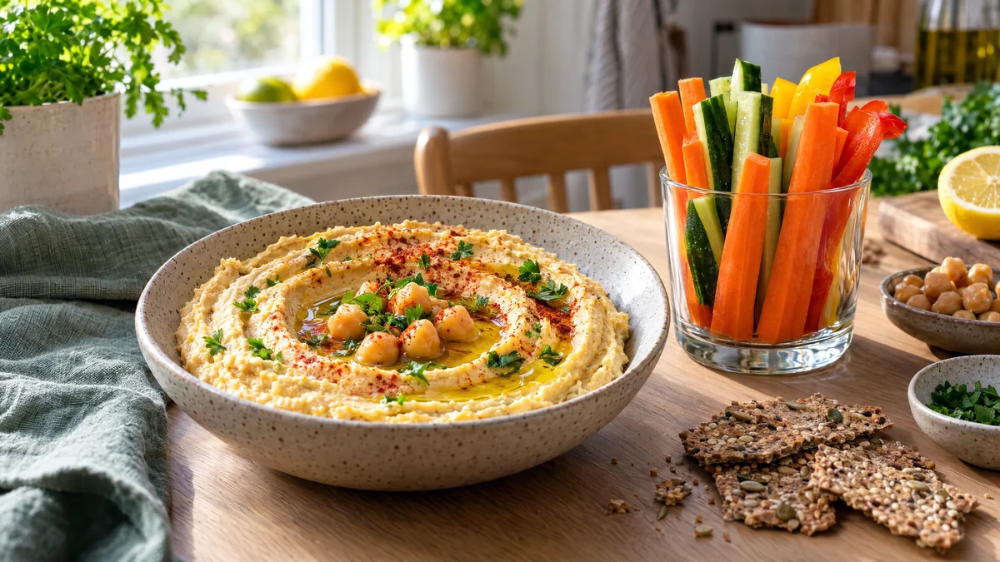

RESTFEST · RECEPTMellanmål · Såser & röror
Snabb hummus med grönsaksstavar
En burk kikärtor, en sked tahini och en citron mixas på fem minuter till en fluffig, sidenlen hummus. Den bres ut i en virvel med olivolja och paprikapulver och serveras med krispiga morötter, gurka och paprika att doppa. Mellanmålet som får grönsakslådan att ta slut.
- Förberedelse
- 10 min
- Tillagning
- 0 min
- Portioner
- 4 som mellanmål
- Nivå
- Nybörjare
 Det här behöver du
Det här behöver du
Tryck på + vid det du behöver köpa.
Hummus
Till servering
Gör så här
- Häll av kikärtorna i en sil över en skål. Spara spadet till chokladmoussen i recept 9. Skölj kikärtorna och spara några hela till garnering.
- Vill du ha extra slät hummus, nyp av skalen genom att trycka kikärtorna mellan fingrarna. Det tar några minuter men gör stor skillnad.
- Mixa kikärtor, tahini, vitlök, citronsaft, spiskummin och salt med en stavmixer eller i en matberedare i 1 minut.
- Tillsätt olja och iskallt vatten lite i taget och mixa i 2–3 minuter till, tills hummusen är fluffig och slät. Smaka av med mer salt och citron.
Dekoration och servering
- Bred ut hummusen i en grund skål med baksidan av en sked och gör en virvel i mitten.
- Ringla olivolja i virveln och toppa med de sparade kikärtorna, paprikapulver och persilja.
- Ställ grönsaksstavarna på högkant i ett glas bredvid, så blir det lätt att doppa.
- Gott med fröknäcket i recept 61 eller på en macka med gurka.
- Hummusen håller ca 4 dagar i kylen.
Mått och ugnstemperaturer
Måtten är svenska (dl, msk, tsk, krm). Ugnstemperaturerna gäller vanlig ugn med över- och undervärme; med varmluft, sänk med 20 grader.